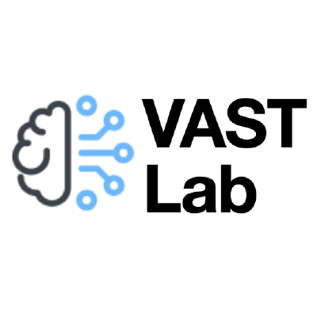

Robust multimodal vision
Optical flow, scene flow, low-light vision, multispectral sensing, and sensor fusion for challenging real-world conditions.
Computer vision · Robotics · Brain-inspired intelligence
My research develops spatial intelligence for machines, with a focus on 3D vision, robotic perception, SLAM, multimodal sensing, and brain-inspired learning. The long-term goal is to enable machines to perceive, understand, and interact with the 3D world in a human-like way.
Autonomous systems serve as an important research platform: they connect robust perception with spatial reasoning and reliable action in real environments.
ACM TOG 2026: “Closed-Form Convolution for Physically-Accurate Defocus in Gaussian Splatting” was published in ACM Transactions on Graphics. Paper
CVPR 2026: “Linguistic Priors for Visual Decoupling: Towards Symmetric Vision-Brain Alignment” was published at CVPR. Paper
Open-source release: We released a low-cost, portable handheld 3D reconstruction system with build documentation and printable CAD models. Project
CVPR 2025: Our multimodal implicit enhancement method for efficient optical flow estimation was published at CVPR. Paper
Optical flow, scene flow, low-light vision, multispectral sensing, and sensor fusion for challenging real-world conditions.
3D reconstruction, neural radiance fields, Gaussian splatting, pose estimation, and geometric scene representations.
SLAM, localization, navigation, place recognition, spatial reasoning, and autonomous interaction.
Vision–brain alignment, brain-machine coupled learning, multimodal cognition, and biologically inspired representations.
W. Dai, H. Wu, X. Weng, Y. Zheng, Y. Ming, W. Kong
Loading publication index…

VAST Lab is my research group at Hangzhou Dianzi University. We study human-like spatial intelligence for autonomous systems and train graduate and undergraduate researchers through both fundamental research and hands-on system development.
Perceive the world. Understand the world. Interact with the world.
Code and projects on GitHub ↗I welcome master's and PhD applicants, undergraduate researchers, and short-term visiting students interested in spatial intelligence, 3D vision, robotics, or brain-inspired intelligence. Academic and industry collaborations are also welcome.